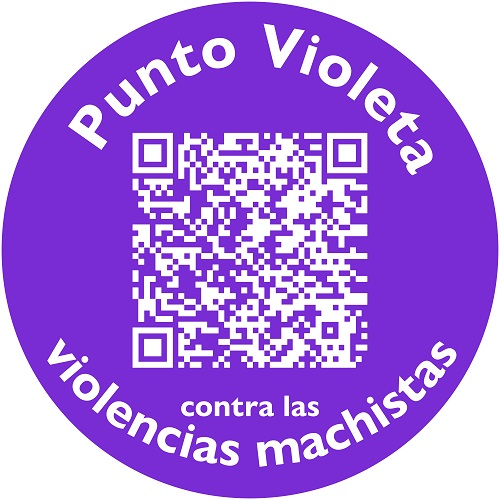

PUNTO VIOLETA

Objetivos:
1.Implicar a toda la sociedad en la lucha contra la violencia machista.
2.Acercar los servicios integrales a las víctimas a través de su entorno.
3.Facilitar información sobre cómo actuar ante un caso de violencia machista a establecimientos, entidades, empresas, organismos públicos.
Herramientas del Punto Violeta:
1.Guía Punto Violeta para actuar frente a la Violencia Machista: una guía con información sobre cómo actuar ante un caso de violencia machista de tu entorno, así como con recursos para las propias víctimas. También incluye información sobre qué es la violencia machista, sus diferentes manifestaciones, y cómo detectarla.
2.Materiales para establecimientos, entidades, empresas, organismos públicos: carteles y adhesivos con un código QR vinculado a la Guía Punto Violeta para actuar frente a la Violencia Machista, que tienen como objetivo señalar que ese espacio es un lugar seguro para las víctimas, donde pueden recibir información y acompañamiento si lo necesitan.
3.Distintivos para identificar a personas implicadas en la lucha contra la violencia machista: cualquier persona que lo utilice representará una puerta de acceso para las mujeres víctimas a los recursos que estas necesiten.
Punto Violeta es un instrumento promovido por el Ministerio de Igualdad para
implicar al conjunto de la sociedad en la lucha contra la violencia machista
y extender, de forma masiva, la información necesaria para saber cómo actuar
ante un caso de violencia contra las mujeres. Forma parte del catálogo de
medidas urgentes del Plan de Mejora y Modernización impulsado por distintos
ministerios del Gobierno de España en el contexto de alarma machista de los
últimos meses y supone un cambio de enfoque en las políticas públicas de
atención a las víctimas, situando la violencia machista como un problema
estructural que requiere de la implicación del conjunto de la sociedad para
acabar con ella.